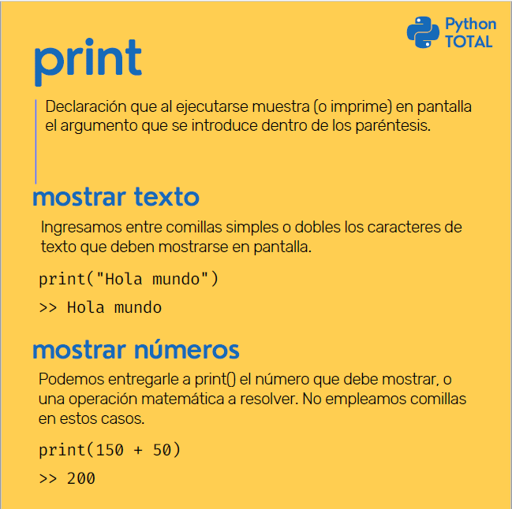
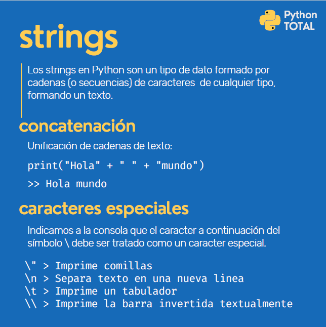
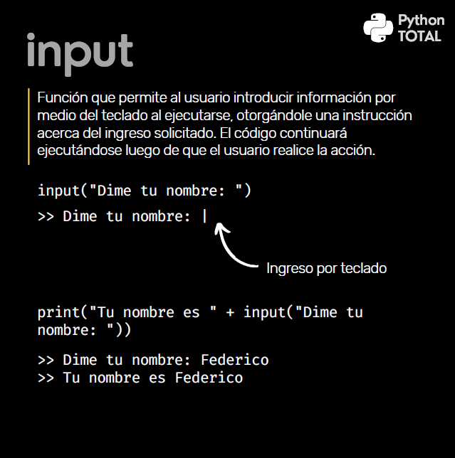

Python - Notas
1. ¿Por Qué Python?
Lenguaje de Alto Nivel.
Similar al Lenguaje Humano.
Ideal para Principiantes.
Más productividad, menos código.
2. Instalar Python y Pycharm
IDE -> Entorno Integrado de Desarrollo
Entornos virtuales
Ventajas
-Asistencia en la Estructura
-Detección de Errores
-Depuración
-Ejecutar simulaciones, etc
Usado en este Curso Pycharm
->https://www.jetbrains.com/pycharm/download/?source=google&medium=cpc&campaign=14127625370&gclid=CjwKCAiAv_KMBhAzEiwAs-rX1E69P0BVt7lxCoibh3yc-_pm1cxARFzrlXOhX_Gm3pTbTP5pqkZILBoCBgYQAvD_BwE#section=windows
Descargar communnity
Los archivos terminan con .py
3. Declaración Print
Imprimir por pantalla -> Mostrar en pantalla
print (" ")
Pycharm maneja el inglés, debemos cambiarlo para evitar que pinte los errores
->File ->Setting ->Editori ->Inspections ->ProofReading ->Typo (Desactivado)
Le damos Run -> Primer Proyecto
Para imprimir comillas dentro de un pint las ponemos como comillas simples
O al revés..
print("Hola mundo te digo 'Hola'")
Los números no necesitan comillas

Práctica
--------------------------------------------------------
Práctica Print 1 -
Crea un código que imprima en pantalla la expresión Me encanta estudiar Python. Aclaración: presta mucha atención al texto que debes reproducir, ya que errores ortográficos y de puntuación, espacios en blanco adicionales y saltos de línea innecesarios pueden ocasionar errores inesperados que no son detectados por el módulo de evaluación, devolviendo un error en tu ejercicio.
print("Me encanta estudiar Python")
--------------------------------------------------------
Práctica Print 2 -
Crea un código que imprima en pantalla la expresión Estudiar con "Python Total" es super divertido
print('Estudiar con "Python Total" es super divertido')
--------------------------------------------------------
Práctica Print 3 -
Crea un código que imprima en pantalla el número 555, pero no debes imprimirlo directamente, sino como resultado de una operación matemática
print(5+550)
--------------------------------------------------------
4. Strings -> Cadenas de Texto
Cadena de Caracteres.
print('100 + 50') -> String (Entre comillas)
print("Hola"+'Fede') -> Holafede
print("Hola "+'Fede') -> Hola fede
print("Hola"+ " " + 'Fede') -> Hola fede
print("Me llamo \"Federico\"") -> Me llamo "Federico ->Con \ Escapamos caracteres
print("Esta es una lina\nY esta es otra linea") ->Esta es una linea
->Y esta es otra linea
print("\tEsta es la tercera linea") ->\t tabula 4 caracteres -> Esta es la tercera linea
print('This isn\'t a number') ->Escapamos el apostofre ->This isn't a number
print('Este signo \\ es una barra invertida') -> \ Para imprimir la barra

Práctica
--------------------------------------------------------
Práctica String 1 -
Crea un código que imprima en pantalla la siguiente expresión (pero usando print una sola vez): Línea 1 Línea 2 Línea 3
print("Línea 1\nLínea 2\nLínea 3")
--------------------------------------------------------
Práctica String 2 -
Crea un código que imprima en pantalla la siguiente expresión. A B C D E F G H I Notas: - Observa que la distancia horizontal entre los números ha sido creada con una tabulación
print("A\tB\tC\nD\tE\tF\nG\tH\tI")
--------------------------------------------------------
Práctica String 3 -
Crea un código que imprima en pantalla la siguiente expresión: Barra Normal: / Barra Invertida: \
print("Barra Normal: /\nBarra Invertida: \\")
--------------------------------------------------------
5. Input -> Un Prompt
print(input("Dime tu nombre: "))
print(input("Dime tu apellido: "))
print("Tu nombre es " + input("Dime tu nombre: ")) ->Se imprime el texto y la función
print("Tu nombre es " + input("Dime tu nombre: " + " " + input ("Dime tu apellido: " ))
print("Tu nombre es " + (input("Dime tu nombre: ")) + " " + (input ("Dime tu apellido: " )))
->Input dentro de () para visualizarlo mejor.

Práctica
--------------------------------------------------------
Práctica Input 1 -
Crea un código que le permita ingresar una respuesta al usuario, haciéndole la siguiente pregunta: ¿Qué estás estudiando? El código debe poder imprimir en pantalla lo ingresado por el usuario (utilizando print)
print(input("¿Qué estás estudiando?"))
--------------------------------------------------------
Práctica Input 2 -
Crea un código que le permita ingresar una respuesta al usuario, haciéndole la siguiente pregunta: ¿En qué país vives? El código debe poder imprimir en pantalla lo ingresado por el usuario (utilizando print).
print(input("¿En qué país vives?"))
--------------------------------------------------------
Práctica Input 3 -
Crea un código que muestre en pantalla el nombre completo del usuario, permitiéndole ingresar su nombre y apellido con las siguientes instrucciones: Escribe tu nombre: Escribe tu apellido: El código debe poder imprimir en pantalla el nombre y apellido del usuario, separados por un espacio.
print(input("Escribe tu nombre:")+" "+input("Escribe tu apellido:"))
--------------------------------------------------------